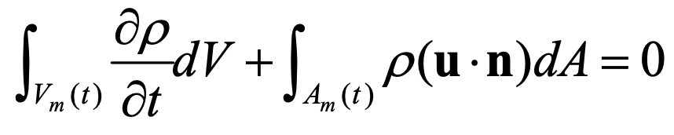
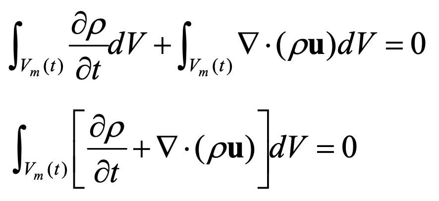
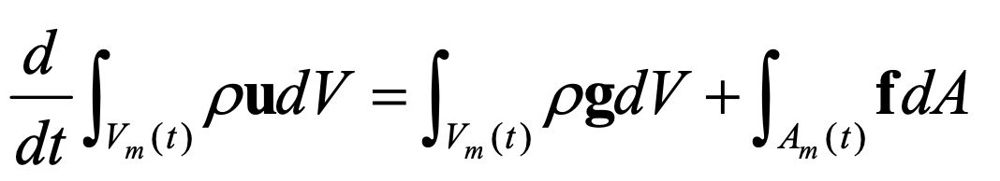
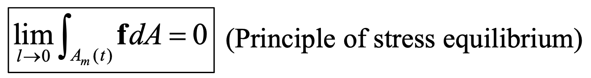
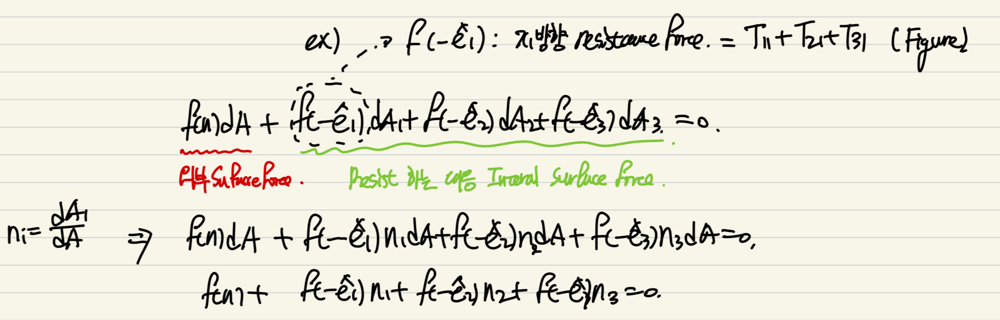
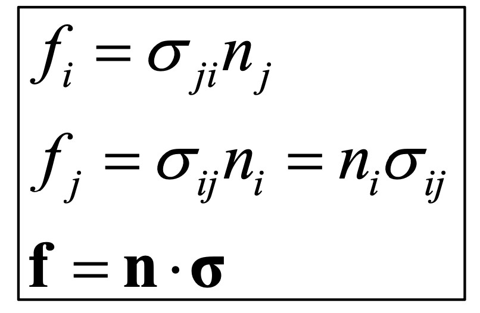

Ch2 Conservation Laws_part1
part1에서는
Ch1에서 배운
Cartesian Tensor
를 사용하여
유체역학 시간에 배운
Conservation of Mass
Conservation of Momentum
을 빠르게 살펴보자.
가장 기본적인 핵심은
레이널즈 수송정리 이다.
https://jeffdissel.tistory.com/3
[Gas Dynamics] Ch 2 Control Volume Analysis - Reynolds Transport theorem
유체의 흐름을 분석하기 위해서는 1. Conserviation of mass2. Conservatino of momentum -> Newton's second law of mtion3. Conservation of Energy 위 3가지 Equation을 정의해야만 한다. 정의하는 Control volume을 설정하고
jeffdissel.tistory.com
(위 글에서 쉽게 이해할 수 있을 것이다.)

Reynolds Transport Theorem(RTT)
여기서,
V(t)는 Control volume의 부피를 의미하고,
A(t) 는 Control surface
b는 Control volume표면의 속도벡터이다.
바로 이제 보존법칙 2가지 분석들어가 보자.
- Conservation of Mass, F(x,t) =ρ (x,t)
RTT left hand side

움직이는 control volume 내부의
물분자는 계속해서 동일하므로,
시간에 따른 변화는 존재하지 않는다.
RTT right hand side

여기서 핵심은 b = u 라는 점이다, control volume이 여기서는
아주 극소의 유체 volume이라고 가정하였기 때문에,
유체의 속도와 동일하다고 고려한다.
이제, gauss theorem 을 통해서,
면적분을 체적분 + gradient
(divergence thoeorem)
으로 전환해준다.

이후, 체적분으로 묶어주면

다음과 같이 Cartesian tensor를 활용하여,
Gradient를 표현한,
Conservation of mass Eq.
= Continuity Eq이 도출된다.
- Conservation of Momentum
시작은, Control volume에 대해
운동량 변화량 = Body force + surface Force
로 시작한다.
(d(mv)/dt = F or ma = F)
뉴턴 2법칙

Body force는 중력만 있다고 가정.
여기서, 먼저 Surface Force항 을 살펴보고,
left hand side의 운동량 시간변화량을 살펴보자.
Surface Force, f
시작은,

stress평형이다. control volume 표면에 대해서
surface force면적분을 해주고,
아주 작은 미소단위로 극한을 취해주면 = 0
이유는 간단하다, 밑에처럼 미소단위로 갈때,
부피가 0에더 가까워진다.

따라서, 운동량 변화량 식을 보면, Vm(t)항들이 0 이 되어버리기 때문에
(Control volume - 미소단위의 유체 부피)
surface force term도 0 이된다.
여기서, 그림처럼

이제 f를 1,2,3방향으로 전부 쪼개주자.
Stress equilibrium을 활용하여, 식을 전개해주자.

결론적으로, tensor로 나타내면.

이후, Gauss theorem을 활용하여
체적분으로 바꾸면 Gradient로 표현 할 수 있다.

지금까지,
Body force는 중력만 있다고 가정.
surface force항을 유도하였고,
이제 좌항을 정리해보자.
Reynolds Transport Theorem을 활용하여,
(F(x,t) =
ρ
uj
전개해주면

이후, 기존의 F = ma 식에 대입해주면,
최종적으로 전부 체적분 형태이다.
따라서, 체적분을 제거해준 후, 전개해주자.

전개하면 초록색 부분이
연속방정식 항임을 알 수 있다.
(tensor 왜 쓰는지 알겠다, 전개가 쉽다)
위에서 증명했었음.

따라서, 최종적으로 다음과 같이
Conservation of momentum Eq.
Cuachy's Equation of Motion
식이 유도된다.